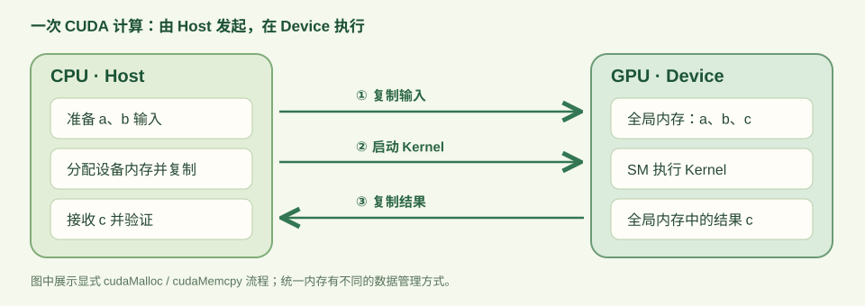
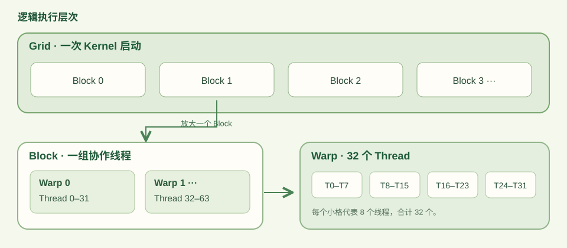
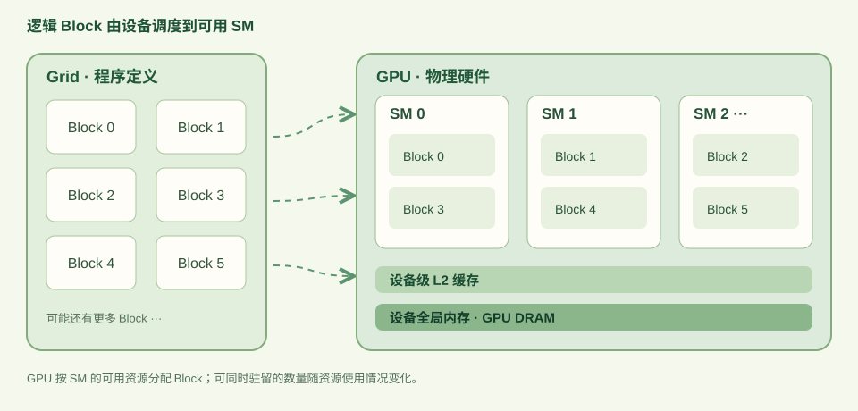
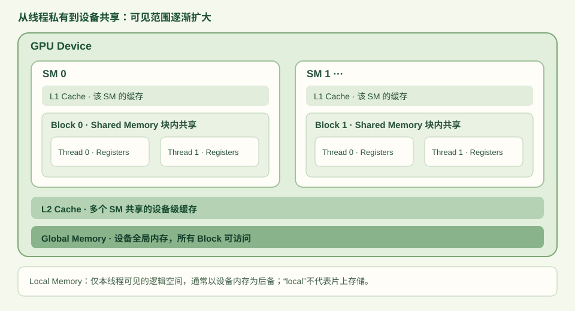
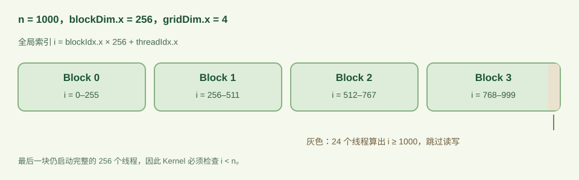

CUDA 编程模型
CUDA 程序在由 CPU 和 GPU 组成的异构系统中运行。CPU 及其内存称为 Host（主机），GPU 及其内存称为 Device（设备）。程序从 Host 代码开始执行；Host 通过 CUDA 运行时 API 分配设备内存、传输数据并启动 GPU 函数。由 Host 启动、在 Device 上执行的函数称为 Kernel（核函数）。一次 Kernel 启动会让多个 GPU 线程运行同一函数，线程索引决定各自处理的数据。

图 1 展示的是使用 cudaMalloc 和 cudaMemcpy 的显式数据传输路径。Kernel 启动通常相对于 Host 线程异步：启动调用返回时，GPU 计算不一定已经完成。需要在 Host 读取结果或判断执行状态时，通过同步操作确认 Kernel 完成。CUDA 还提供统一内存等其他内存管理方式，数据传输路径因此可以不同。
线程组织与硬件执行
CUDA 的基本编程层次是 Grid（网格）→ Block（线程块）→ Thread（线程）。一次 Kernel 启动对应一个 Grid，Grid 包含多个相同尺寸的 Block，Block 包含多个 Thread。Grid 和 Block 均可设为一维、二维或三维。线程通过 blockIdx、threadIdx 和 blockDim 等内置变量确定自己的工作位置。

Warp 是 Block 内每组 32 个线程的执行分组，并非在 Grid 与 Block 之间额外指定的启动层次。同一 Warp 的线程采用 SIMT（Single-Instruction, Multiple-Threads）方式执行同一 Kernel；线程走不同分支时，部分线程可能在某段指令期间不参与执行。Warp 的概念因此与分支行为及访存合并有关。
GPU 由多个 SM（Streaming Multiprocessor，流式多处理器）组成。一个 Block 的全部线程在同一个 SM 上执行；资源允许时，一个 SM 可以同时驻留多个 Block。不同 Block 的调度顺序没有保证，因此普通 Kernel 不应依赖跨 Block 的执行先后，也不能用 __syncthreads() 建立跨 Block 屏障。寄存器、共享内存和线程数等资源共同限制每个 SM 可驻留的 Block 数量。

对于一维数组，线程负责的全局下标为 i = blockIdx.x × blockDim.x + threadIdx.x。若每个 Block 启动 256 个线程，长度为 1000 的数组需要 ⌈1000 / 256⌉ = 4 个 Block。实际启动 1024 个线程，其中最后 24 个线程没有对应的数组元素，Kernel 必须先判断 i < 1000，再读写数组。这里的 Grid、Block 和 Thread 是程序的逻辑组织；SM、缓存和设备内存是执行这些线程的硬件资源。
内存空间与数据传输
CUDA 内存空间的主要区别是可见范围、生命周期和物理位置。寄存器与局部内存对单个线程私有，共享内存供同一 Block 的线程使用，全局内存可由设备上的多个 Block 访问。作用范围与存储位置不能混为一谈：局部内存虽然只对单个线程可见，其物理后备位于设备内存。

| 内存空间 | 可见范围 | 位置与生命周期 | 典型用途 |
|---|---|---|---|
| 寄存器 | 单个线程 | SM；随线程执行 | 标量临时值 |
| 局部内存 | 单个线程 | 设备内存；随 Kernel 执行 | 无法置于寄存器的线程私有数据 |
| 共享内存 | 同一 Block | SM；随 Block 执行 | 块内交换与重复使用数据 |
| 全局内存 | 设备线程 | 设备内存；分配后直到释放 | 输入、输出和大型数组 |
| 常量内存 | 设备线程只读 | 设备内存；有专用缓存 | Kernel 执行期间不变的参数 |
L1 和 L2 属于硬件缓存，不等同于代码直接分配的共享内存。共享内存由程序显式使用，块内线程交换数据时仍需遵守同步要求。全局内存中的数组可由 cudaMalloc 分配，并通过 cudaMemcpy 在 Host 与 Device 之间复制。相邻线程访问相邻地址通常有利于合并全局内存请求；实际内存事务还取决于访问尺寸、地址分布和缓存行为，详见 官方合并访存说明。
向量加法 Kernel
向量加法的输入是长度为 n 的数组 a、b，输出满足 c[i] = a[i] + b[i]。各元素之间没有数据依赖，因此一个线程可以负责一个输出下标。Kernel 用全局索引确定元素位置，并在访问设备内存前检查边界。
__global__ void vectorAdd(const float* a, const float* b, float* c, int n) {
int i = blockIdx.x * blockDim.x + threadIdx.x;
if (i < n) c[i] = a[i] + b[i];
}
n = 1000、每个 Block 256 个线程时的下标映射。最后 24 个线程由 i < n 排除。完整的 vector_add.cu 包含 Host 端数组初始化、设备内存分配与复制、Kernel 启动、错误检查、结果验证及资源释放。其启动配置为 threadsPerBlock = 256、blocks = (n + 255) / 256。启动后，cudaGetLastError() 检查启动错误；cudaDeviceSynchronize() 等待执行完成，并可报告执行期错误。两种检查承担不同作用，不能仅凭启动检查成功判断计算成功。相关行为见 CUDA C++ 官方示例。
具备 NVIDIA GPU 与 CUDA Toolkit 的环境可在下载文件所在目录执行以下命令。示例使用可精确表示的小整数构造输入，因此使用直接相等比较；一般浮点计算应根据误差要求设置容差。
nvcc -O2 -std=c++17 vector_add.cu -o vector_add
./vector_add
# 预期输出：OK: 1000 elements, 4 blocks, 256 threads/block性能测量与分析
向量加法对每个元素执行两次 float 读取和一次 float 写入，程序层面的访问量为 12 × n 字节。这个数值描述 Kernel 请求的数据量，不能直接等同于 DRAM 实际传输量；缓存命中和内存事务可能改变后者。由此可推断，大数组上的向量加法具有较低的计算量与访存量之比，但是否受设备内存带宽限制，仍须结合目标 GPU 和实测指标判断。
示例默认只有 1000 个元素，适合验证索引和边界，不适合作为带宽基准。测量 Kernel 时，应先预热，在相同 Stream 中使用 cudaEventRecord 标记计时区间，以 cudaEventElapsedTime 读取设备侧时间，并说明是否把 Host↔Device 复制计入区间。对于短 Kernel，重复启动区间也可能包含启动之间的空隙；报告平均值时应写明重复次数、数据规模、Block 大小、GPU 型号和计时范围。计时方法见 CUDA Best Practices Guide。
性能分析可从 ncu ./vector_add 的报告入手：Launch Stats 描述启动规模，Memory Workload Analysis 帮助检查访存请求与传输，Occupancy 描述 SM 上活跃 Warp 占可用 Warp 的比例。Occupancy 高不必然意味着运行时间短，需将这些指标与耗时及正确性一起解释。本文未对该示例提供 GPU 实测数据，也不据此声称达到某一带宽；指标含义见 Nsight Compute Profiling Guide。
结论
CUDA Kernel 的线程由 Grid 和 Block 组织，Block 内线程执行时组成 Warp；Block 被调度到 SM，线程访问范围不同的设备内存空间。向量加法将这三组关系落实为全局索引、边界检查和全局内存读写。性能判断还需要明确数据规模与计时范围，并区分程序请求的数据量和实际内存传输量。